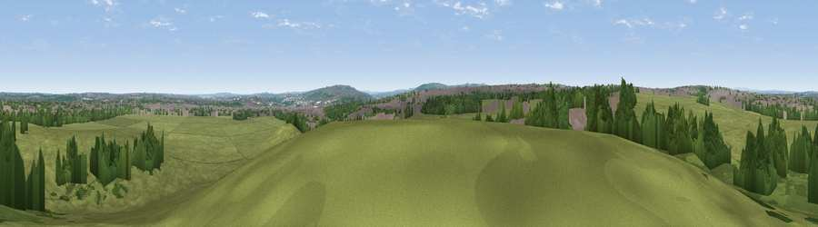

Viewpoint near Newcastle upon Tyne
#25945 in England · top 55% of its area beats it · near Newcastle upon TyneWhere it is
The exact computed spot (NZ 23475 66125). Click the marker for map links.
The view, rendered

A 360° render of this exact spot computed from the terrain model, tree cover and land cover — summer colours, afternoon light, calibrated against photographs of famous viewpoints. Real trees, hedges and buildings will differ in detail.
The panorama
Grey silhouette: terrain skyline in each direction (720 bearings, Earth curvature and refraction included). Dashed green: skyline with trees (+15 m) and buildings (+8 m) as obstacles. Blue strip: how far the ground is visible on each bearing.
Where the view opens
Wedge length = distance to the farthest visible ground on that bearing (vegetation-aware). Rings at 10, 25 and 50 km.
What fills the view
60% grassland · 22% woodland · 17% built-up ·
Angular shares of the visible panorama (visual magnitude), not map area. Landscape diversity 0.43 (0–1 Shannon).
Key numbers
More beautiful places nearby
The staircase of upgrades: each row has a higher view potential than everything closer. Driving times are estimates from straight-line distance, calibrated against real road routing — check an actual route before setting out.
| Place | Direction | Drive | Score |
|---|---|---|---|
| Viewpoint near Swalwell | SW · 2 km | ~6 min | 55.6 |
| Viewpoint near Gateshead | SE · 5 km | ~11 min | 60.7 |
| Viewpoint near Springwell | SSE · 7 km | ~15 min | 61.6 |
| White Hill | SE · 7 km | ~15 min | 69.8 |
| Viewpoint near Sunniside | S · 8 km | ~17 min | 77.6 |
| Pontop Pike | SSW · 16 km | ~28 min | 77.8 |
| Viewpoint near Rothbury | NNW · 38 km | ~56 min | 81.1 |
| Dove Crag | NNW · 38 km | ~57 min | 82.3 |
54.98917, -1.63466 · source: screening · position refined by local search. Computed location — check access rights before visiting.